6 Get wanding data
Data are generated in R/getDataWanding-targets.R file
Thinking about using the wanding data to evaluate whether we can use the seasonal shocking data to talk about patterns of movement. If there is a lot of movement in the wanding data, may be difficult to justify using the 4 seasonal samples to describe movemenmts. If not much movement, may be ok.
Also, just interesting to see movement patterns from the wanding data.
6.1 Get wanding data targets
Code
cdWB_wanding0 <- tar_read(cdWB_wanding0_target)
str(cdWB_wanding0)tibble [14,880 × 25] (S3: tbl_df/tbl/data.frame)
$ tag : chr [1:14880] "00088cf41b" "00088cf41b" "00088cf41b" "00088cf435" ...
$ detectionDate : POSIXct[1:14880], format: "2010-09-27 15:08:45" "2010-10-18 18:16:22" ...
$ sampleName : chr [1:14880] "92710.00" "101810.00" "102510.00" "12610.00" ...
$ river : chr [1:14880] "wb jimmy" "wb jimmy" "wb jimmy" "wb jimmy" ...
$ section : num [1:14880] 13 14 14 2 6 8 8 11 12 10 ...
$ area : chr [1:14880] "trib" "trib" "trib" "trib" ...
$ survey : chr [1:14880] "portableAntenna" "portableAntenna" "portableAntenna" "portableAntenna" ...
$ readerId : chr [1:14880] "iso" "iso" "iso" "iso" ...
$ aliveOrDead : chr [1:14880] "alive" "alive" NA "alive" ...
$ instance : num [1:14880] 1 2 3 1 1 1 2 1 1 1 ...
$ pass : num [1:14880] NA NA NA NA NA NA NA NA NA NA ...
$ quarter : num [1:14880] 2 1 1 4 2 4 4 3 4 2 ...
$ leftOrRight : chr [1:14880] "l" "m" NA "r" ...
$ habitat : chr [1:14880] "pool" "run" NA "pool" ...
$ cover : chr [1:14880] NA NA NA NA ...
$ justification : chr [1:14880] NA NA NA NA ...
$ cohort : num [1:14880] 2010 2010 2010 2010 2009 ...
$ species : chr [1:14880] "bkt" "bkt" "bkt" "bkt" ...
$ dateEmigrated : Date[1:14880], format: NA NA ...
$ sex : chr [1:14880] NA NA NA NA ...
$ riverOrdered : Ord.factor w/ 4 levels "West Brook"<"WB Jimmy"<..: 2 2 2 2 2 2 2 2 2 3 ...
$ sectionN : num [1:14880] 13 14 14 2 6 8 8 11 12 10 ...
$ year : num [1:14880] 2010 2010 2010 2010 2010 2010 2010 2010 2010 2010 ...
$ j : num [1:14880] 270 291 298 340 333 305 313 270 270 236 ...
$ sectionWQuarter: num [1:14880] 13.25 14 14 2.75 6.25 ...Code
cdWB_wandingTribs3 <- tar_read(cdWB_wandingTribs3_target)
cdWB_wandingWB2 <- tar_read(cdWB_wandingWB2_target)
cdWB_wandingWB3 <- tar_read(cdWB_wandingWB3_target)Code
cdWB_wanding0 %>%
group_by(riverOrdered, cohort) %>%
summarize(n = n()) %>%
pivot_wider(values_from = "n", names_from = "riverOrdered") %>%
arrange(cohort) %>%
kable() %>%
kable_styling(full_width = T)| cohort | West Brook | WB Jimmy | WB Mitchell | WB OBear |
|---|---|---|---|---|
| 1996 | 4 | NA | NA | NA |
| 1997 | 9 | NA | NA | NA |
| 1998 | 33 | 41 | 4 | NA |
| 1999 | 141 | 44 | 2 | 2 |
| 2000 | 352 | 211 | 116 | 66 |
| 2001 | 1966 | 1022 | 414 | 639 |
| 2002 | 2169 | 615 | 467 | 894 |
| 2003 | 80 | 650 | 277 | 1004 |
| 2004 | 195 | 118 | 298 | 3 |
| 2005 | 61 | 51 | 90 | NA |
| 2006 | NA | 95 | 126 | NA |
| 2007 | NA | 125 | 256 | NA |
| 2008 | NA | 186 | 41 | NA |
| 2009 | NA | 1089 | 840 | NA |
| 2010 | NA | 50 | 28 | NA |
| NA | 6 | NA | NA | NA |
6.2 All wanding data
Based on the following, looks like best data for analysis are trout in the tribs in 2009 2010. Need to decide what to do for salmon
Code
#everything
ggplot(cdWB_wanding0, aes(j, sectionWQuarter, color = tag) )+
geom_point()+
geom_line() +
scale_y_continuous(limits = c(0,50))+
theme(legend.position = "none")+
ggtitle("Everything") +
facet_grid(riverOrdered ~ year)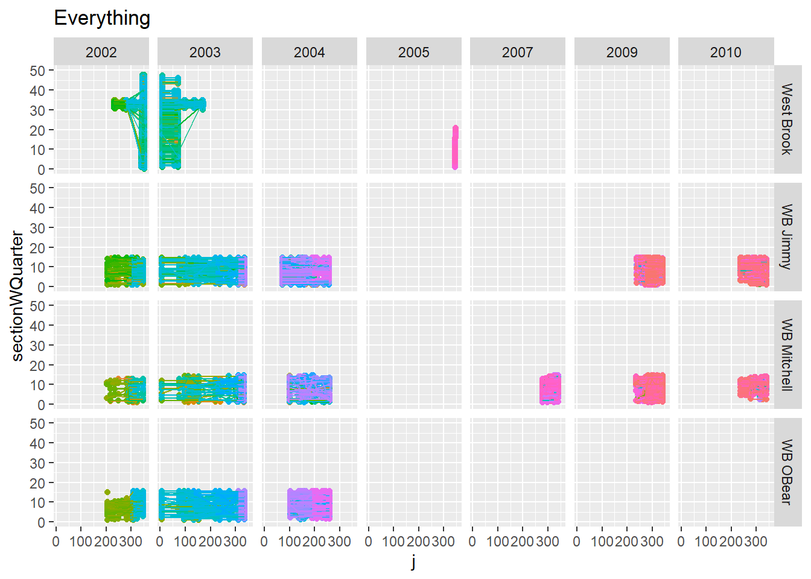
Code
#everything
ggplot(filter(cdWB_wanding0, aliveOrDead != 'dead'), aes(j, sectionWQuarter, color = tag) )+
geom_point()+
geom_line() +
scale_y_continuous(limits = c(0, 50))+
theme(legend.position = "none")+
ggtitle("Not dead") +
facet_grid(river~year)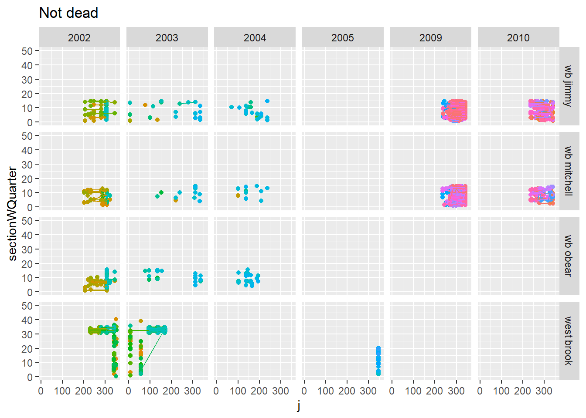
6.3 Tributaries
Code
# Tribs
# Loop over species
for (s in c("bkt","bnt") ) {
tmp2 <-
ggplot(filter(cdWB_wanding0, river!="west brook" & species == s & aliveOrDead != 'dead'),
aes(detectionDate,sectionWQuarter, group = tag))+
geom_point(aes(shape = aliveOrDead), size = 2)+
geom_line() +
scale_y_continuous(limits = c(-2, 15))+
# theme(legend.position="none")+
ggtitle(paste("Tribs", s, "not dead")) +
facet_grid(river ~ year, scales = 'free')
print(tmp2)
}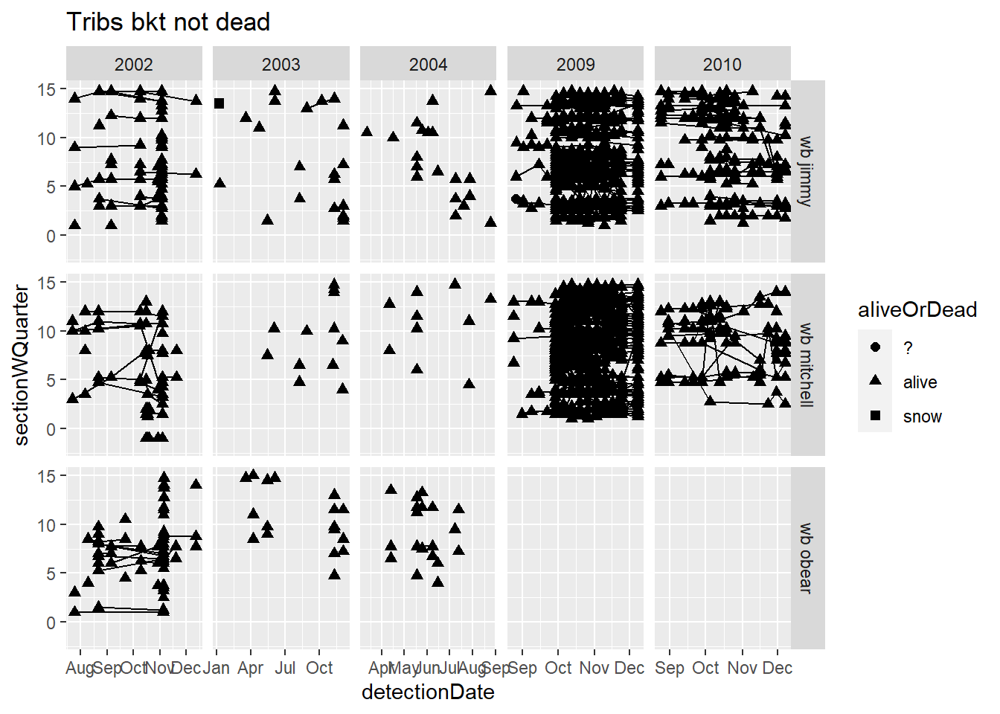
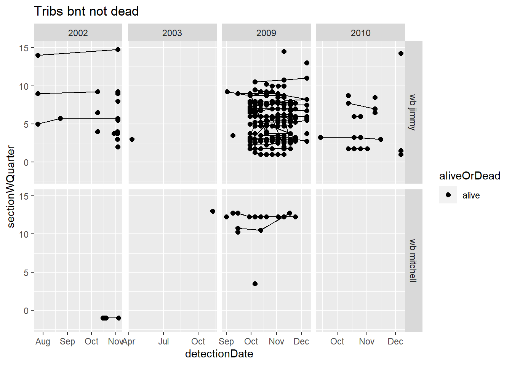
6.3.1 Which species_year_tributary?
Raw data graphs for the 4 sets of data to focus on
Code
# Tribs - focus on a year
for (s in c("bkt", "bnt") ) {
for (y in c(2009, 2010) ) {
for (r in c("wb mitchell", "wb jimmy", "wb obear")) {
tmp <-
ggplot(filter(cdWB_wanding0, river == r & species == s & year == y & aliveOrDead != 'dead'),
aes(detectionDate,sectionWQuarter, color = tag))+
geom_point(aes(shape=aliveOrDead),size=2)+
geom_line() +
# scale_y_continuous(limits=c(0,15))+
theme(legend.position="none")+
ggtitle(paste("Tribs", s, y, r, "not dead"))
# facet_grid(species~year,scales='free')
print(tmp)
}
}
}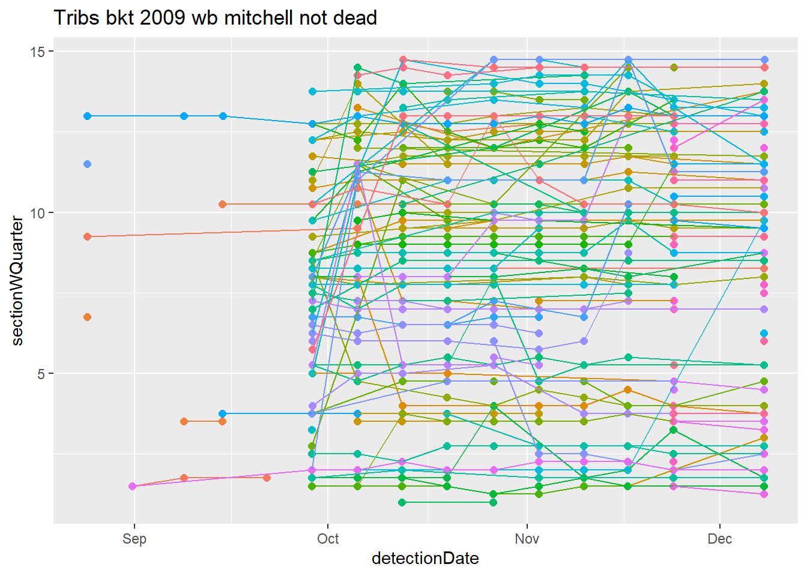
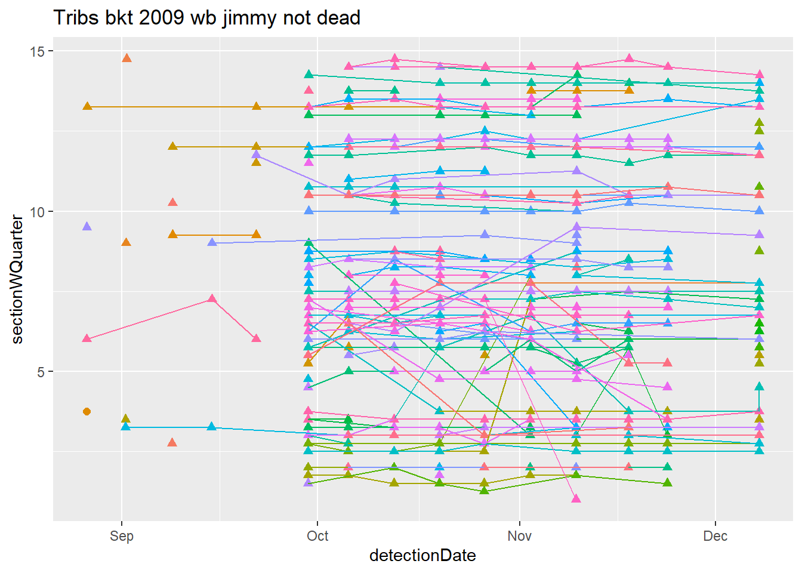
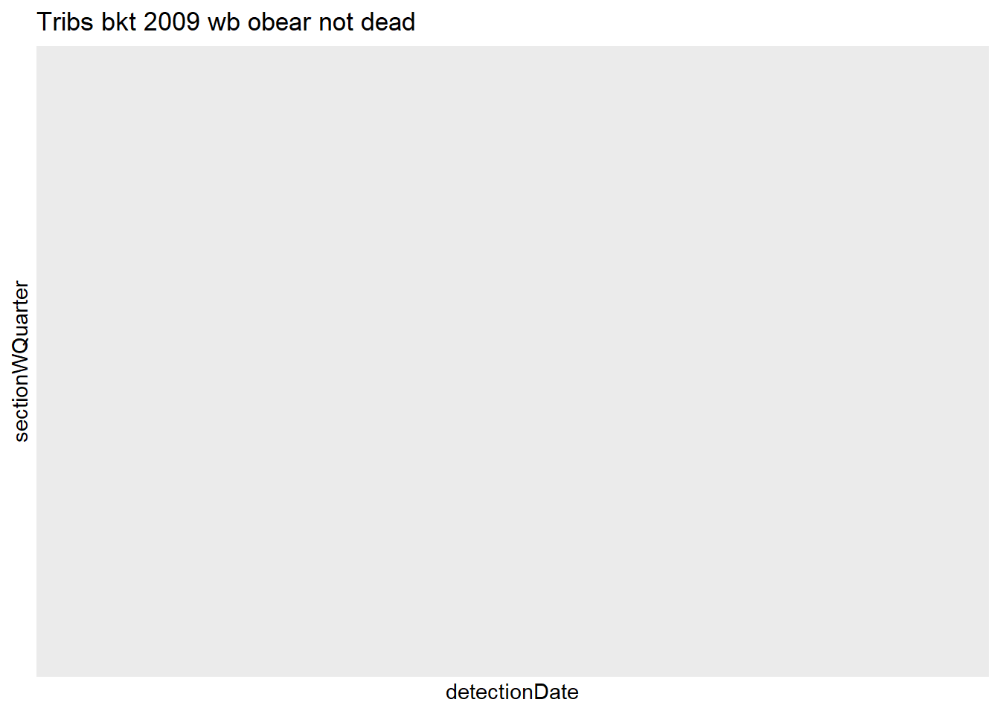
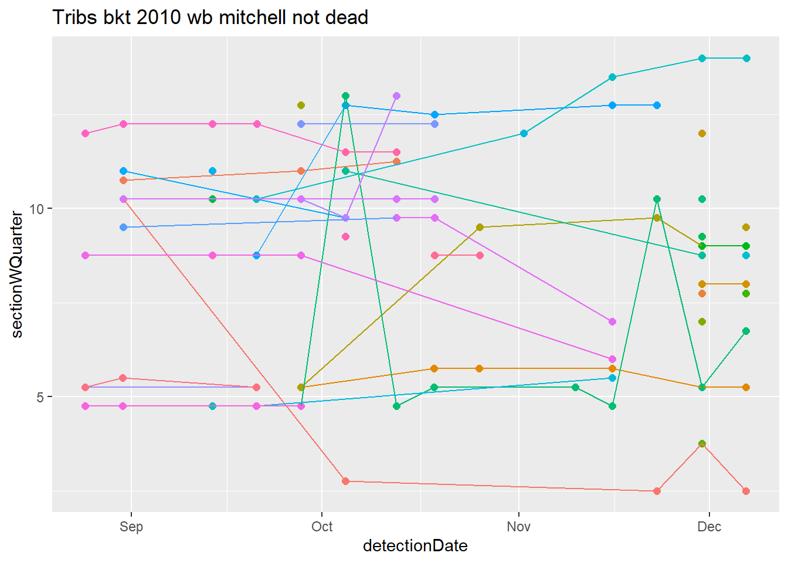
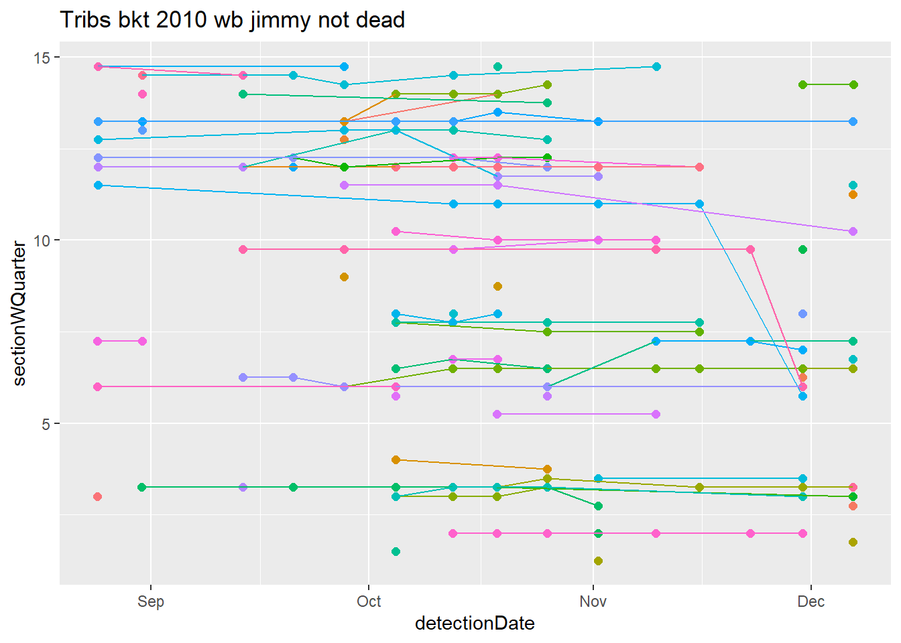

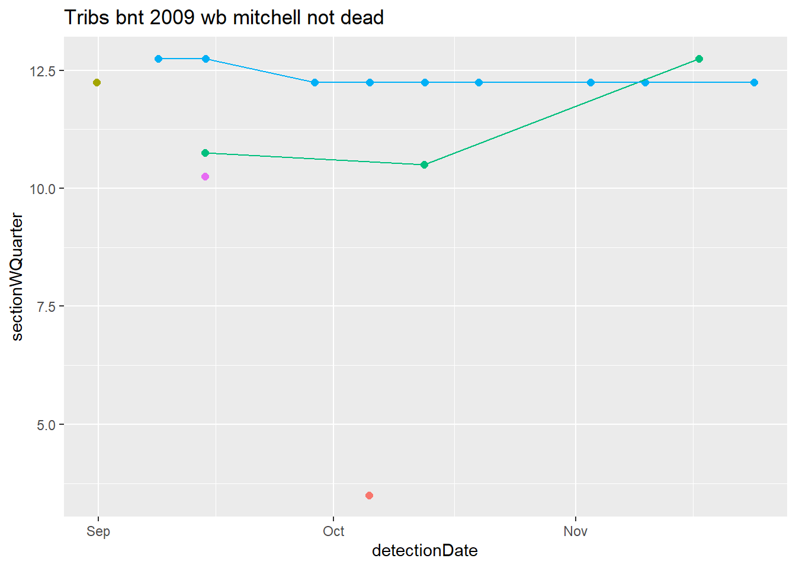


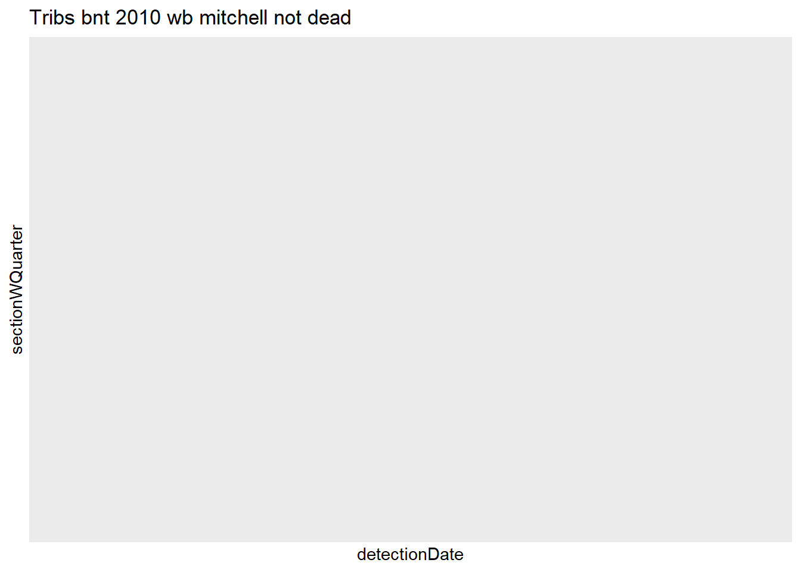

6.3.2 Movement
Counts of observations by month, river, year
Code
table(cdWB_wandingTribs3$month, cdWB_wandingTribs3$river, cdWB_wandingTribs3$year), , = 2009
wb jimmy wb mitchell
9 42 66
10 185 161
11 170 117
, , = 2010
wb jimmy wb mitchell
9 20 14
10 46 17
11 21 12Code
ggplot(cdWB_wandingTribs3, aes(moveRate, color = species)) +
geom_freqpoly() +
facet_grid(river ~ year)
Frequency distribution of movement rates
Code
ggplot(cdWB_wandingTribs3, aes(moveRate, linetype = species)) +
geom_freqpoly(binwidth=5, boundary = min(cdWB_wandingTribs3$moveRate)) +
scale_x_continuous("Movement rate (m/week)") +
scale_y_continuous("Frequency") +
theme_bw(base_size=25)+
theme( strip.background = element_blank()
#strip.text = element_blank()
#legend.position = "none"
) +
facet_grid(~ river)
6.3.3 Intervals
Code
# #Cut moveTime into intervals to make sure patterns look same for recaptures of different intervals
# ggplot(cdWB_wandingTribs4_target, aes( moveRate, color=interval ) ) +
# geom_freqpoly() +
# facet_grid(river~year+species)
#Try a boxplot
ggplot( cdWB_wandingTribs3 %>% filter(month %in% 9:11),
aes( factor(month),moveRate, color = species ) ) +
geom_boxplot() +
facet_grid(river~year)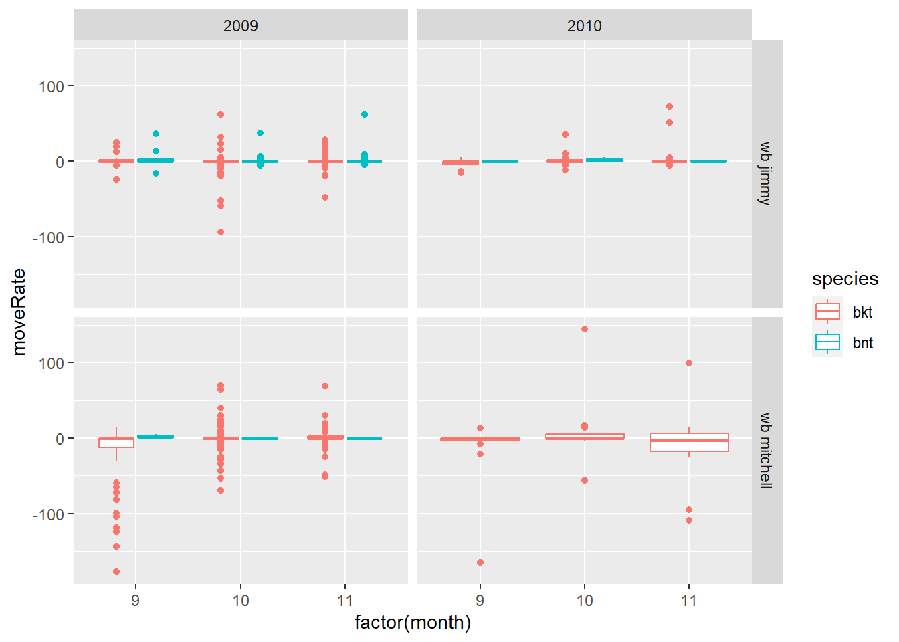
6.3.4 Random effect models
Code
# RE model for individual movement variation
#
mod0 <- lmer(abs(moveRate) ~ (1|tag), data = cdWB_wandingTribs3)
# ####
mod1 <- lmer(abs(moveRate) ~ factor(species) + (1|tag), data = cdWB_wandingTribs3)
# ####
mod2 <- lmer(abs(moveRate) ~ factor(species) * factor(month) + (1|tag), data = cdWB_wandingTribs3)
# ####
mod3 <- lmer(abs(moveRate) ~ factor(species) + factor(month) + factor(year) + (1|tag), data = cdWB_wandingTribs3)
# ####
mod4 <- lmer(abs(moveRate) ~ factor(species) * factor(month) * factor(year) + (1|tag), data = cdWB_wandingTribs3)
#
AIC(mod0,mod1,mod2,mod3,mod4) %>% arrange(AIC) df AIC
mod4 14 7388.654
mod2 8 7429.937
mod3 7 7434.280
mod1 4 7460.786
mod0 3 7466.674Code
#
summary(mod4)Linear mixed model fit by REML ['lmerMod']
Formula: abs(moveRate) ~ factor(species) * factor(month) * factor(year) +
(1 | tag)
Data: cdWB_wandingTribs3
REML criterion at convergence: 7360.7
Scaled residuals:
Min 1Q Median 3Q Max
-2.4602 -0.2715 -0.1552 -0.0014 9.1656
Random effects:
Groups Name Variance Std.Dev.
tag (Intercept) 31.14 5.581
Residual 266.81 16.334
Number of obs: 871, groups: tag, 326
Fixed effects:
Estimate Std. Error t value
(Intercept) 15.462 1.774 8.714
factor(species)bnt -9.948 4.965 -2.004
factor(month)10 -10.510 1.989 -5.283
factor(month)11 -11.744 2.049 -5.733
factor(year)2010 -8.289 3.486 -2.378
factor(species)bnt:factor(month)10 6.680 5.466 1.222
factor(species)bnt:factor(month)11 8.700 5.652 1.539
factor(species)bnt:factor(year)2010 2.813 18.086 0.156
factor(month)10:factor(year)2010 9.706 4.219 2.300
factor(month)11:factor(year)2010 21.045 4.745 4.435
factor(species)bnt:factor(month)10:factor(year)2010 -3.630 19.402 -0.187
factor(species)bnt:factor(month)11:factor(year)2010 -17.396 20.572 -0.846
Correlation of Fixed Effects:
(Intr) fctr() fc()10 fc()11 f()201 fc():()10 fc():()11 f():()2
fctr(spcs)b -0.357
fctr(mnt)10 -0.850 0.304
fctr(mnt)11 -0.831 0.297 0.739
fctr(y)2010 -0.500 0.179 0.432 0.423
fctr():()10 0.309 -0.879 -0.364 -0.269 -0.157
fctr():()11 0.301 -0.856 -0.268 -0.362 -0.153 0.779
fc():()2010 0.096 -0.274 -0.083 -0.082 -0.193 0.241 0.235
f()10:()201 0.397 -0.142 -0.470 -0.346 -0.799 0.171 0.125 0.154
f()11:()201 0.361 -0.129 -0.319 -0.431 -0.706 0.116 0.156 0.136
f():()10:() -0.086 0.247 0.102 0.075 0.174 -0.281 -0.218 -0.915
f():()11:() -0.083 0.235 0.074 0.099 0.163 -0.214 -0.275 -0.851
f()10: f()11: f():()10:
fctr(spcs)b
fctr(mnt)10
fctr(mnt)11
fctr(y)2010
fctr():()10
fctr():()11
fc():()2010
f()10:()201
f()11:()201 0.582
f():()10:() -0.217 -0.127
f():()11:() -0.134 -0.231 0.789 Code
#
randoms <- REsim( mod4, n.sims = 1000 )
plotREsim(randoms)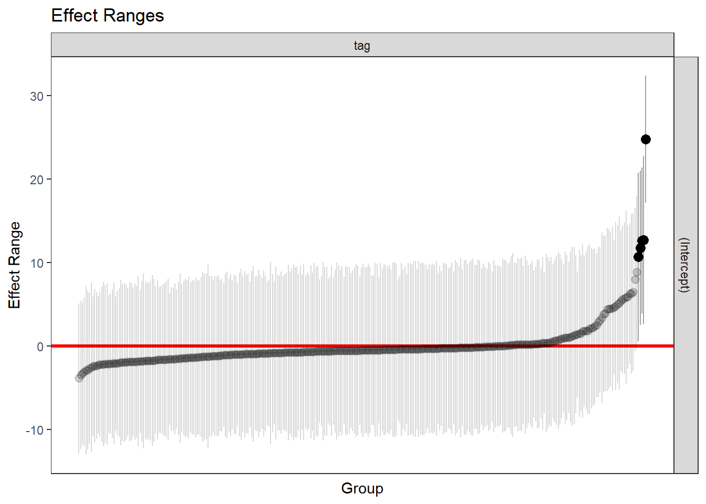
Code
#
ggplot(randoms, aes(mean)) +
geom_histogram(binwidth = 0.75, boundary = min(randoms$mean)) +
scale_x_continuous("Indivdual random effect for movement rate (m/week)") +
scale_y_continuous("Frequency") +
theme_bw(base_size = 25)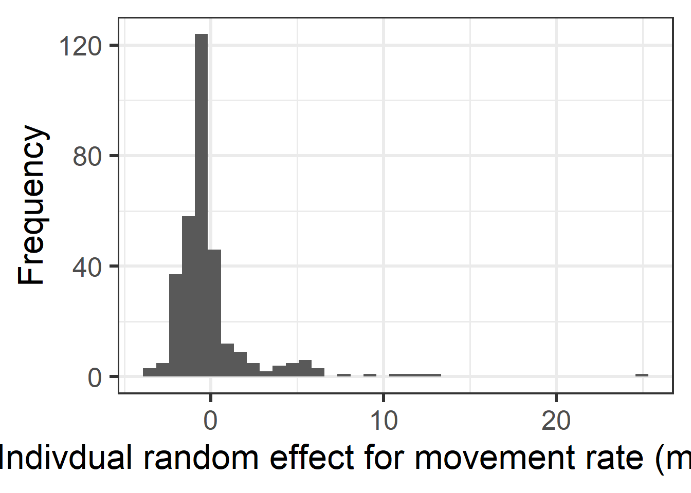
Code
# # % of fish with CI that don't overlap 0
randoms$lCI <- randoms$mean - randoms$sd * 1.96
randoms$uCI <- randoms$mean + randoms$sd * 1.96
randoms$sig <- (randoms$uCI < 0 | randoms$lCI > 0)
#
count(randoms, sig)$n/nrow(randoms)[1] 0.98466258 0.015337426.3.5 Young-of-year fish
Code
ggplot(cdWB_wandingTribs3, aes(moveRate, linetype = species)) +
geom_freqpoly() +
scale_x_continuous("Movement rate (m/week)") +
scale_y_continuous("Frequency") +
#theme_bw(base_size=25)+
facet_grid(month ~ yoy + river)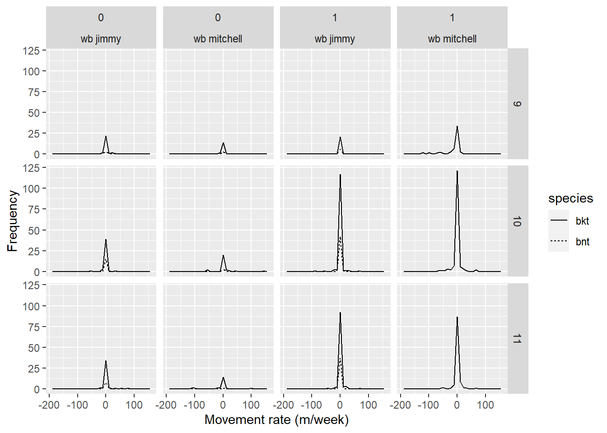
6.4 West Brook
Did not filter by moveTime > 1 because there were within-day samples in the WB (in contrast to the tribs)
6.4.1 West brook wanding data
Calculate and plot movement
Code
# Loop over species
for (s in unique(cdWB_wanding0$species)) {
tmp <-
ggplot(filter(cdWB_wanding0, river == "west brook" & species==s & aliveOrDead != 'dead'),
aes(detectionDate,sectionWQuarter, color = tag))+
geom_point(size=2)+
geom_line() +
scale_y_continuous(limits = c(30,35))+
theme(legend.position = "none")+
ggtitle(paste("WB", s, "not dead")) +
facet_wrap(~ year, scales = 'free')
print(tmp)
}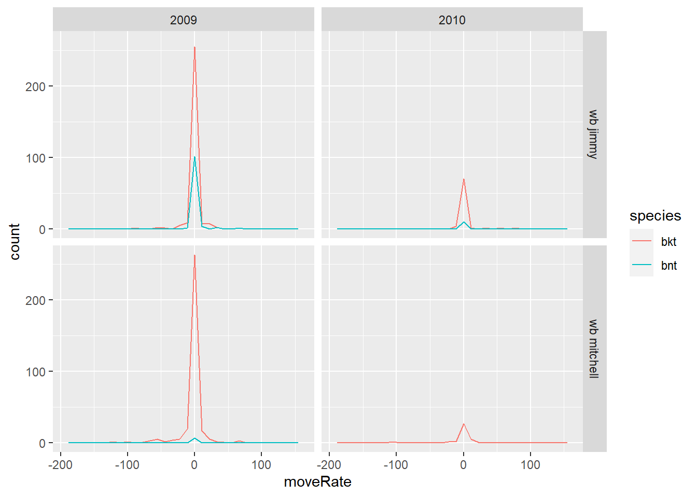


6.4.2 Movement
Code
table(cdWB_wandingWB3$species, cdWB_wandingWB3$month, cdWB_wandingWB3$river, cdWB_wandingWB3$year), , = west brook, = 2002
4 5 6 8 9 10 11 12
ats 0 0 0 28 11 14 149 8
bkt 0 0 0 18 3 12 101 5
, , = west brook, = 2003
4 5 6 8 9 10 11 12
ats 186 281 147 0 0 0 0 0
bkt 90 180 93 0 0 0 0 0Code
#
# # raw
ggplot(cdWB_wandingWB3, aes(j, sectionWQuarter, color = tag)) +
geom_point()+
geom_line() +
# scale_y_continuous(limits=c(0,50))+
theme(legend.position="none")+
ggtitle("Not dead") +
facet_grid(river~year)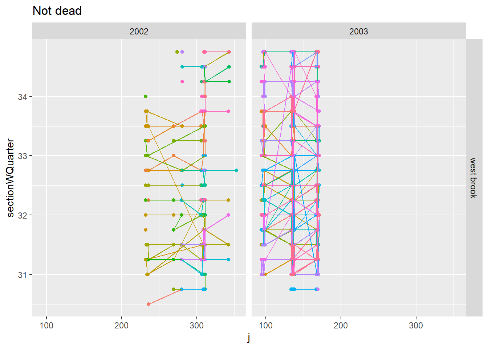
Code
ggplot(cdWB_wandingWB3, aes(moveRate, color = species)) +
geom_freqpoly() +
facet_grid(river ~ year)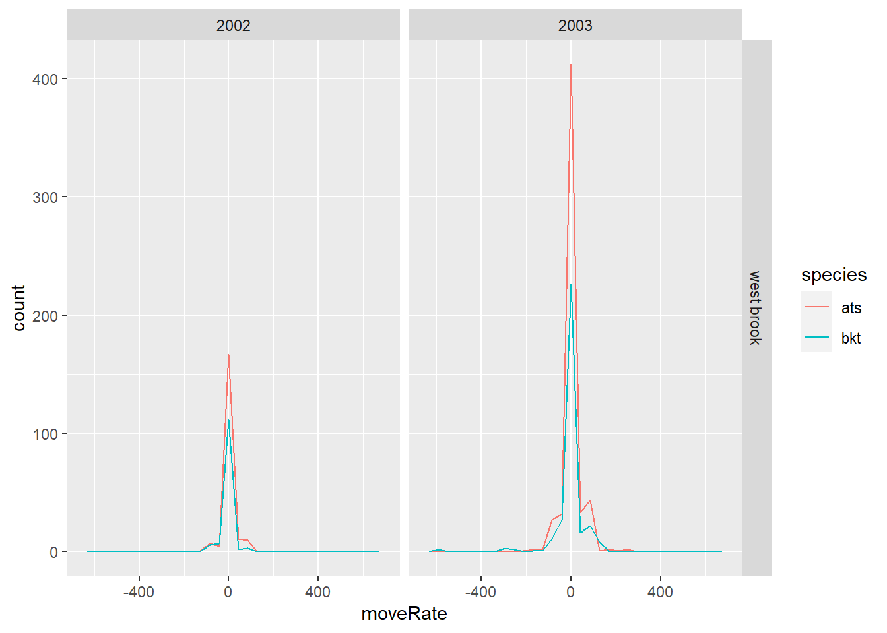
Code
ggplot(cdWB_wandingWB3, aes(moveRate, linetype=species)) +
geom_freqpoly(binwidth = 5, boundary = min(cdWB_wandingWB3$moveRate, na.rm=T)) +
scale_x_continuous("Movement rate (m/week)") +
scale_y_continuous("Frequency") +
theme_bw(base_size=25)+
theme( strip.background = element_blank()
#strip.text = element_blank(),
#legend.position = "none"
) 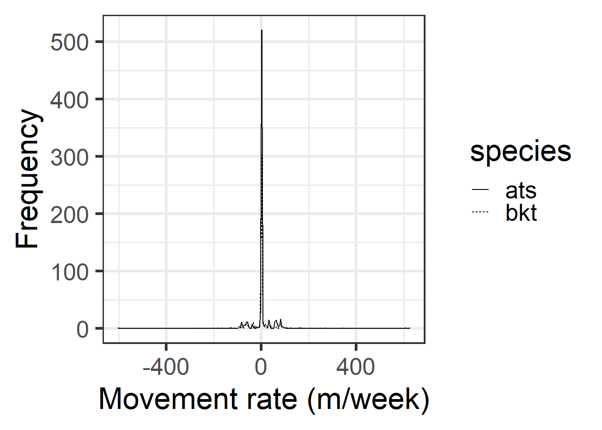
Code
# #ats is solid line
# 6.4.3 Random effects models
Code
mod0WB <- lmer( abs(moveRate) ~ (1|tag), data=cdWB_wandingWB3 )
####
mod1WB <- lmer( abs(moveRate) ~ factor(species) + (1|tag), data=cdWB_wandingWB3 )
####
mod2WB <- lmer( abs(moveRate) ~ factor(species) * factor(month) + (1|tag), data=cdWB_wandingWB3 )
####
mod3WB <- lmer( abs(moveRate) ~ factor(species) + factor(month) + factor(year) + (1|tag), data=cdWB_wandingWB3 )
AIC(mod0WB,mod1WB,mod2WB,mod3WB) %>% arrange(AIC) df AIC
mod2WB 18 12944.76
mod3WB 11 13001.44
mod1WB 4 13052.68
mod0WB 3 13060.72Code
summary(mod2WB)Linear mixed model fit by REML ['lmerMod']
Formula: abs(moveRate) ~ factor(species) * factor(month) + (1 | tag)
Data: cdWB_wandingWB3
REML criterion at convergence: 12908.8
Scaled residuals:
Min 1Q Median 3Q Max
-2.5703 -0.4130 -0.1898 0.0996 10.7899
Random effects:
Groups Name Variance Std.Dev.
tag (Intercept) 531.2 23.05
Residual 2369.0 48.67
Number of obs: 1216, groups: tag, 124
Fixed effects:
Estimate Std. Error t value
(Intercept) 15.257 4.977 3.066
factor(species)bkt 7.872 8.440 0.933
factor(month)5 7.095 4.977 1.426
factor(month)6 2.478 6.373 0.389
factor(month)8 8.650 10.720 0.807
factor(month)9 -12.233 15.934 -0.768
factor(month)10 -10.745 18.187 -0.591
factor(month)11 -2.775 5.712 -0.486
factor(month)12 -18.671 18.086 -1.032
factor(species)bkt:factor(month)5 7.775 8.643 0.900
factor(species)bkt:factor(month)6 23.543 10.572 2.227
factor(species)bkt:factor(month)8 -31.321 18.194 -1.722
factor(species)bkt:factor(month)9 -10.230 33.752 -0.303
factor(species)bkt:factor(month)10 59.008 25.208 2.341
factor(species)bkt:factor(month)11 -8.667 9.734 -0.890
factor(species)bkt:factor(month)12 4.149 31.494 0.132Code
randomsWB <- REsim(mod2WB, n.sims = 1000)
plotREsim(randomsWB)
Code
ggplot(randomsWB, aes(mean)) +
geom_histogram(binwidth = 4.75, boundary = min(randomsWB$mean)) +
scale_x_continuous("Indivdual random effect for movement rate (m/week)") +
scale_y_continuous("Frequency") +
theme_bw(base_size = 25)
Code
# % of fish with CI that don't overlap 0
randomsWB$lCI <- randomsWB$mean - randomsWB$sd * 1.96
randomsWB$uCI <- randomsWB$mean + randomsWB$sd * 1.96
randomsWB$sig <- (randomsWB$uCI < 0 | randomsWB$lCI > 0)
count(randomsWB,sig)$n/nrow(randomsWB)[1] 0.90322581 0.09677419